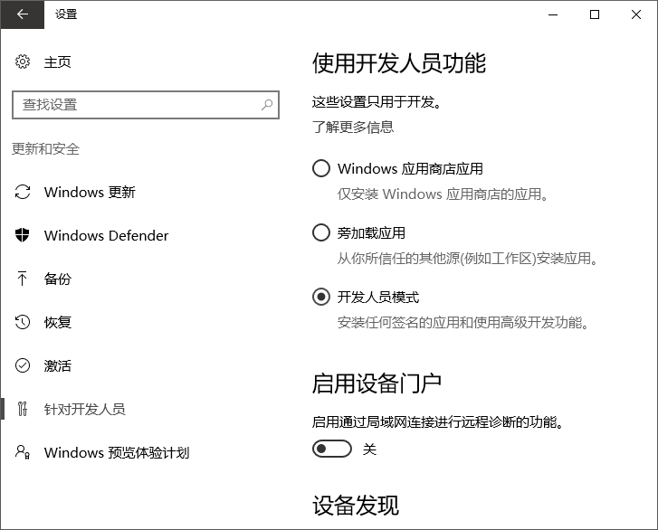
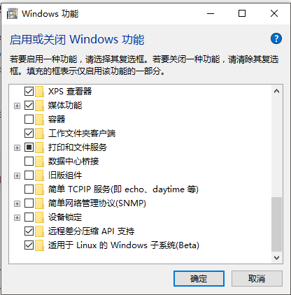
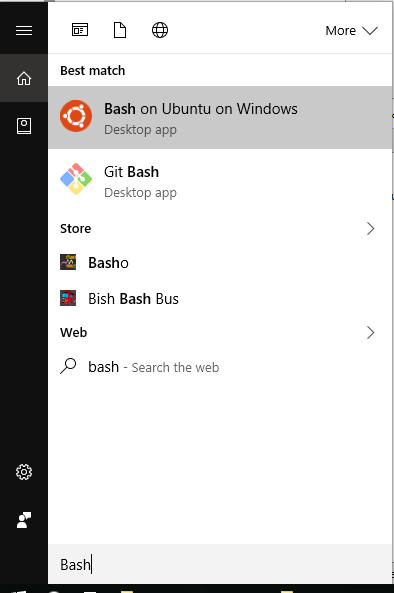

安装 Windows10 Linux子系统
这篇教程只适合最新版的Windows10系统，其他请参考VirtualBox下的Ubuntu安装教程
启用Linux子系统
在Windows设置里，进入更新和安全，开启开发人员模式

在 控制面板 - 程序和功能 里，开启Linux子系统

重启后，在windows搜索里，已经可以搜索到Bash

第一次打开Bash会提示要不要下载安装Ubuntu，键入y回车就会开始下载
下载完成后会提示新建一个用户，输入用户名和密码。这个用户并不需要和windows用户一致
完成后就可以，就可以进入下一步开始Neural Style的安装了
其他
所有linux子系统的文件都位于这个windows隐藏目录下%localappdata%\Lxss，可以用资源管理器从这里把文件拷贝出来，但如果用资源管理器向这里写入文件可能会和linux的权限配置有冲突。
反过来，在linux子系统下，可以在/mnt/找到所有windows文件